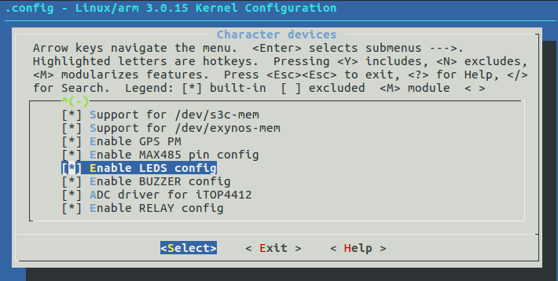
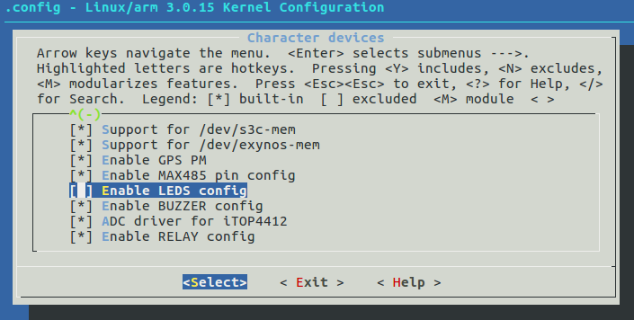

[toc]
内核编译
kernel编译步骤
Linux 内核配置系统
Linux 内核配置系统由三个部分组成。
- Makefile 文件：分布在 Linux 内核源码中的 Makefile 文件，定义了 Linux 内核的编译规则。
- Kconfig 文件：给用户提供配置选择的功能。
- 配置工具：这里使用的是 menuconfig，相比其它工具，这个工具使用的比较多。
- make config，这是基于文本的最为传统的配置界面，不推荐使用。
- make menuconfig，基于文本菜单的配置界面，不依赖于QT或GTK+，且非常直观。
- make xconfig，要求 安装QT，用的比较少。
- make gconfig，要求 安装GTK，用的比较少。
Menuconfig的操作
.config文件和menuconfig的关系
以 leds 小灯的驱动配置为例，介绍 menuconfig 具体执行过程。
在修改之前，.config里配置如下：
1 | CONFIG_LEDS_CTL=y |
打开menuconfig 配置界面，如下：
现按‘N’取消“Enable LEDS config ”配置，如下：
.config里配置变成如下：
1 | # CONFIG_LEDS_CTL is not set |
Kconfig和menuconfig的关系
正在更新中。。。